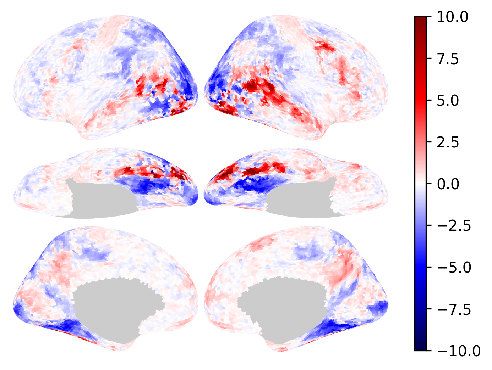

Plot a colorbar along with the image
Plot a colorbar along with the image#
This example shows how to plot a colorbar besides the brain.

import numpy as np
from brainplotlib import brain_plot, example_data
import matplotlib.pyplot as plt
print(example_data.shape, example_data.dtype)
(18742,) float64
img, scale = brain_plot(
example_data, vmax=10, vmin=-10, cmap='seismic', return_scale=True)
fig = plt.figure(
figsize=(img.shape[1] / 300, img.shape[0] / 300), dpi=300)
plt.imshow(img)
plt.axis('off')
cbar = plt.colorbar(scale, shrink=0.8, aspect=30)
plt.show()